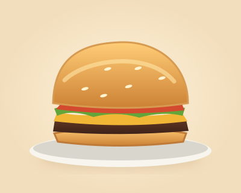
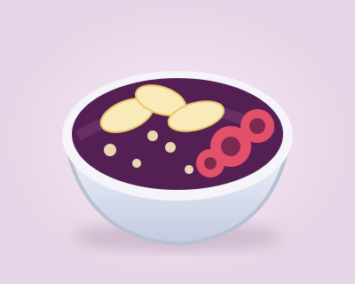

SEU NOVO CARDÁPIO
Um cardápio que dá vontade de pedir.
Fotos, categorias, descrições e preços em uma experiência bonita no celular.
Seu cardápio digital, seus pedidos e seus clientes mais conectados. Simplifique a operação do seu restaurante com a Aladay.


Mais praticidade para quem vende. Mais facilidade para quem pede. Descubra o que você pode fazer com a Aladay.
Fotos, categorias, descrições e preços em uma experiência bonita no celular.
Facilite o recebimento dos pedidos e concentre as informações de cada compra.
Seu cliente aponta a câmera e acessa o cardápio sem precisar instalar nada.
Acompanhe a rotina com uma visão clara dos pedidos recebidos e seus status.
Escolhe os produtos, organiza o carrinho e encaminha o pedido com praticidade.
Uma plataforma preparada para evoluir com novos recursos e integrações para o restaurante.
Conheça o Aladay AIUma experiência que conecta seu restaurante ao cliente sem complicar o processo.
Quero experimentarPelo link ou QR Code, o cardápio abre direto no celular.
Fotos, detalhes e um carrinho simples para montar o pedido.
As informações seguem pelo fluxo configurado com o WhatsApp.
Estamos preparando uma experiência de IA para ajudar restaurantes a responder dúvidas e organizar atendimentos pelo WhatsApp, com configuração por estabelecimento e transferência para pessoas quando necessário.
Faça um teste com nosso cardápio ilustrativo. Adicione produtos, veja seu carrinho e descubra como a jornada pode ser simples.
Carne, queijo e molho da casa
R$ 29,90Molho especial e muito sabor
R$ 49,90Com frutas e complementos
R$ 19,90Encontre uma configuração que faça sentido para o tamanho e a rotina do seu restaurante. Conheça os planos e a oferta de teste disponíveis.
Fale com a equipe ou solicite seu teste para consultar as condições atuais.
Quero conhecer os planos Valores e recursos dependem do plano contratado. Nenhum preço foi presumido nesta demonstração.Confira as respostas mais importantes antes de começar.
Falar sobre meu restauranteNão. O cliente pode acessar o cardápio digital diretamente no navegador do celular, pelo link ou QR Code.
A plataforma contempla jornadas de pedidos que podem ser configuradas para a operação do restaurante. As opções disponíveis dependem da configuração contratada.
Sim. O envio de pedidos pelo WhatsApp faz parte da proposta da Aladay e deve ser configurado conforme os canais do restaurante.
O Aladay AI está em desenvolvimento. Consulte a equipe sobre disponibilidade, testes e recursos que poderão ser habilitados.
Conte um pouco sobre sua operação e compare as condições dos planos oficiais da Aladay. Evitamos divulgar valores não confirmados nesta prévia.
Deixe seus dados para saber mais sobre os recursos, planos e possibilidades da Aladay.